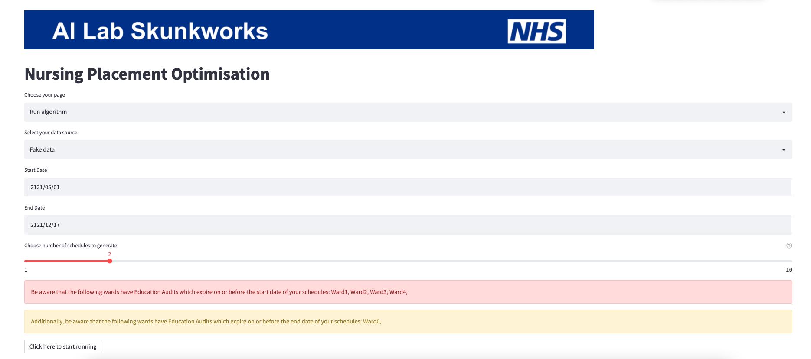
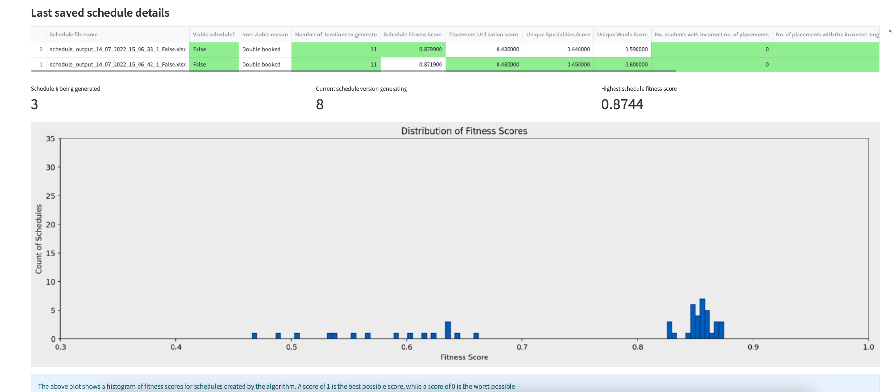
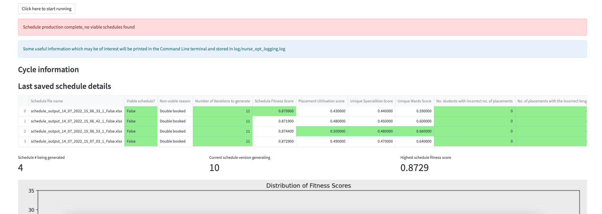
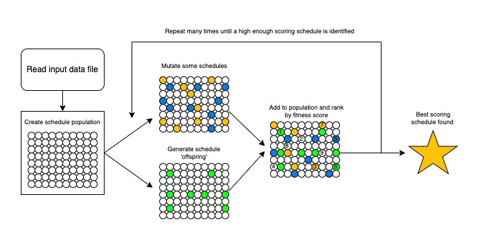
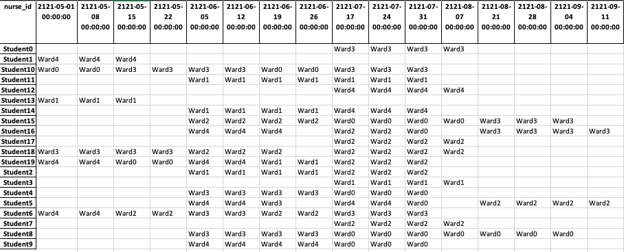

Nursing Placement Schedule Optimisation Tool
Optimisation problem developed with Imperial College Healthcare Trust to produce optimised schedules for student nurses going on placement within the trust.
This project is an example of the AI Skunkworks team offering capability resources to produce proof-of-concepts which could be applicable to the NHS at large. The project ran from January 2022 to May 2022.
User Interface that is seen upon launching the tool: 
User Interface while the tool is running: 
User Interface after the tool has run: 
Results
A proof-of-concept demonstrator written in Python (machine learning model, user interface and backend)
Case Study
This is a backup of the case study published here on the NHS England Transformation Directorate website.
Students training to become nurses undertake placements at teaching hospitals as part of their studies. These placements endeavour to help students experience and learn practical skills they can apply in their roles once they are qualified. In general, these placement schedules are produced by hand and what may seem to be a relatively simple task, quickly becomes complex once you consider the different constraints involved.
The challenge Can a tool or approach be developed which automatically generates student nurse placement schedules that adhere to the requirements and constraints of the different stakeholders, while additionally providing a more diverse range of placements for the students?
Overview
Any placement allocation process involves three stakeholders - the Trust who will be coordinating and hosting the students on placement, the university where the students undertake classroom study and where the final degree will be provided, and the students themselves.
There is a range of contexts which require consideration. For example, the universities will have set dates when placements should take place, and these are usually particular for each university. Some universities will require students to visit specific types of wards over the course of their placements, while others may be more flexible.
Similarly, the Trust has requirements that must be met. Each ward at a hospital has a maximum student hosting capacity, and this can vary depending on the student’s current year of study. Wards must also keep to internal Education Audit Standards to ensure they can provide necessary support to students, and this must be checked regularly.
When these requirements are combined with the fact that Trusts can have relationships with multiple universities, placing students at tens of wards at a time, it is clear such complex schedules could be time consuming for a placement coordinator to produce. It was calculated the generation of placements for a single year group of students from one university can take each Trust anywhere between five and ten hours. Given multiple universities and multiple intakes the time spent scheduling placements can easily stretch into hundreds of hours for each Trust, each year.
Presently time limitations and the lack of quantification ability presented by the manual process mean it is not feasible for placements to cover a range of disciplines and specialities, yet this is something universities would like to support to enhance skills development of nurse placements.
What we did
We worked with Imperial College Healthcare NHS Trust, in conjunction with North West London CCGs to undertake this project to develop an AI-driven solution to the problem of placing students. Imperial hosts students from seven universities, placing them across three hospitals, totalling more than 80 wards and placement settings. Imperial College Healthcare NHS Trust is one the largest acute trusts in the UK (according to the Kings Fund), so would provide substantial evidence as to whether this solution was viable. The data used was anonymised as this task could be undertaken without needing to provide any details on a personal level. Instead, information about the hospitals were taken, and randomly generated student profiles were created containing examples of the information the Trust would have about each student.
The task posed here is one of optimisation, of which there are many different approaches. The method selected was a Genetic Algorithm, where the best version of something is found through a process which is like the evolutionary process seen in nature. The algorithm runs as follows:
-
Create a population of objects (in this case, it was a population of potential schedules for all students)
-
Apply ‘mutations’ and produce ‘offspring’ from this population of objects
- Mutations were produced by randomly changing the allocated ward for a random placement
-
Offspring were produced by combining schedules e.g. taking the front half of one schedule, and the back half of another schedule and sticking them together to produce a hybrid
-
Put the ‘mutated’ and ‘offspring’ objects back into the population, and score the population
-
The scoring part is key, as this is what dictates what a ‘good’ schedule looks like. This is where you define what absolutely cannot be in a schedule, and what you’d like a good schedule to have
-
Repeat the process hundreds of times until you have found a schedule which meets all your needs.

A diagram showing how the genetic algorithm works.
Genetic Algorithms will not produce a perfect, optimal solution as the way the problem space is explored is random. This means, while all your requirements will be met, the most varied selection of placements might not be found because it would take too long for the Genetic Algorithm to find that solution. However, a more varied selection of placements will be allocated than at the beginning, or if the process was carried out with the current, manual process.
The chosen approach was to use such a Genetic Algorithm, run multiple times to produce multiple different schedule options, which are then presented back to the placement coordinator for them to cast their expert eye over and choose the best option. Alongside the schedules themselves, the scores which the Genetic Algorithm uses can be presented so that different schedules can be compared to each other. Further, this score can be broken down into components, so the exact strengths and weaknesses of each schedule can be seen, allowing the placement coordinator to evaluate which suits their Trust and its students.
Deciding how to score schedules
The scoring of schedules is arguably the most important part of a Genetic Algorithm because it defines what a ‘good’ schedule and ‘bad’ schedule might look like. The scoring components can be divided into two categories: ‘must-haves’ and ‘nice-to-haves’.
Must-have scoring components are things a schedule must adhere to or otherwise it could not be used. In the current process, the placement coordinator would ensure any schedule produced meets these criteria:
-
Each ward and placement setting does not have more students allocated than their capacity allows. This includes both overall and for each year group. Year groups have different capacities because each year requires a different level of support and management.
-
Any ward a student is placed on is aligned to the student’s COVID risk level. Some wards will have a higher risk of COVID exposure than others, and some students will be at a higher risk of COVID than others.
-
Students must only be on one placement at a time. While this is an obvious statement to a human, this must be included in the scoring of the schedules, so the algorithm understands this is not acceptable.
-
Students must have a specific ward or placement setting allocated for each placement. Similar to the previous point, this feels like an obvious criteria, but must be enforced to make sure the final schedule produced is useful.
Meanwhile, nice-to-have scoring components focus more on trying to ensure diversity of placements. These are the things the Genetic Algorithm tries to maximise (or increase as much as possible):
-
Number of unique wards. This helps to signal to the algorithm that, as much as possible, students should be placed at a ward where they have not been before.
-
Number of unique specialities. To build upon unique wards, this aims to send students to gain experience in a speciality which they have not previously been placed in.
-
Placement Capacity Utilisation percentage. This helps to address cases where wards which can host lots of students are chosen more commonly, because it is known they have lots of capacity. By including this component, the algorithm tries to ensure wards and placement settings are as full as possible across the board, spreading the placement load across the Trust.
-
Focus on specific specialisms. The tool has four scoring components which promote inclusion of specialities - Medical, Surgical, Critical Care and Community wards. This helps to ensure placements include specific topics or types of wards. As this is not always necessary, these can be turned on and off, and are turned off by default in the open-source code.
The user interface
A simple user interface was produced using Streamlit, an interactive interface for web browser-based applications, allowing the user to adjust elements of the placement optimisation tool, and to view progress as the tool produces schedules.
Once all schedules are produced, a comparison table is both displayed and saved down, summarising the various scoring components and helping the user begin to understand which schedule of those produced might be the best.
Automating the report
The final benefit of the tool is that insight into the schedules can be easily obtained as the schedules are generated electronically, meaning they can be easily reformatted to provide a different view of the information. As an example, it is straightforward to change a schedule from a format where the placements on each ward are shown, to a format where the placements for each student are shown.
This simplicity extends to being able to calculate hours on placement each week, which is currently a mandatory reporting ask for Trusts. We hear that a substantial amount of time is spent by placement coordinators manually analysing placement schedules to produce reporting around the hours of placement time the Trust has supported each week, from each university.
As part of the tool, the final schedule produced is reported in several different ways:
- From the student’s perspective, showing what placements locations they have been allocated for each week of the studies
- From the ward’s perspective, showing what students they have on placement with them and when
- From a ward capacity utilisation perspective, showing the placement coordinator where there is spare capacity if a placement needs to be manually reallocated
- From a placement hours perspective, providing various summaries of hours across wards, university cohorts and both weekly and quarterly summaries for the mandatory reporting required of the Trust.

An example schedule produced using fake data.
Outcomes and lessons learned
The resulting code, released as open source on our GitHub (available to anyone to re-use), enables users to:
-
Load information about wards, placement, and students into the tool
-
Run the genetic algorithm to produce up to 10 schedules
-
See score comparisons across produced schedules, allowing quantitative comparison
-
Automate mandatory reporting
-
Where relevant technical expertise is available, the scoring metrics could be extended and updated to reflect exactly what the user would be looking for.
The tool is estimated to save hundreds of hours constructing and analysing schedules for nursing students. This time can be spent much more effectively elsewhere, thereby freeing up placement coordinators to utilise their expertise across the Trust. Additionally, the tool produces improved schedules by consistently taking into account the wards and specialities that a student has already undertaken a placement within.
It should be noted this tool aims to support placement coordinators, as the process of producing placement schedules isn’t just fitting together all the pieces. Bespoke requests will come in from students, requiring tweaking of placement schedules to accommodate a wide range of circumstances. This tool aims to provide a high-quality baseline from which placement coordinators can construct schedules which meet every requirement, from all over the Trust.
We can't fix the nursing shortage without training more nurses and for that, we need to have (the right) clinical placements available. This tool will not only help us to allocate placements more efficiently and effectively, but it will also free up valuable time for the practice learning facilitators to focus on teaching and professional development for students. Ultimately more students will be able to get the placements and training they need. – Hai Lin Leung, Programme Manager, North West London CCG
Finally, a successful element of this project has been the knowledge sharing and mutual upskilling between the two parties. AI Lab Skunkworks helped Imperial College Healthcare Trust identify and implement a novel AI-led approach which provided a solution they may otherwise not have been able to explore. Meanwhile, Imperial College Healthcare Trust shared their expertise in how the placement allocation process works, particularly what does and does not work well. This was useful underlying information the AI Lab Skunkworks team hopes to share more broadly across the range of projects we work on.
What’s next?
The NHS AI Lab Skunkworks team has released the code from the project on GitHub to demonstrate how the tool might work, using generated fake data.
A pilot is planned to evaluate how well the tool works in practice, working with Imperial College Healthcare Trust during a future student intake. Following this pilot, and an evaluation exercise, improvements will be identified and implemented in a subsequent phase of work.
Who was involved?
This project was a collaboration between the NHS AI Lab Skunkworks, within the Transformation Directorate at NHS England, and Imperial College Healthcare NHS Trust.
NHS AI Lab Skunkworks is a team of data scientists, engineers and project leaders who support the health and social care community to rapidly progress ideas from the conceptual stage to a proof of concept.
| Output | Link |
|---|---|
| Open Source Code & Documentation | Github |
| Case Study | Case Study |